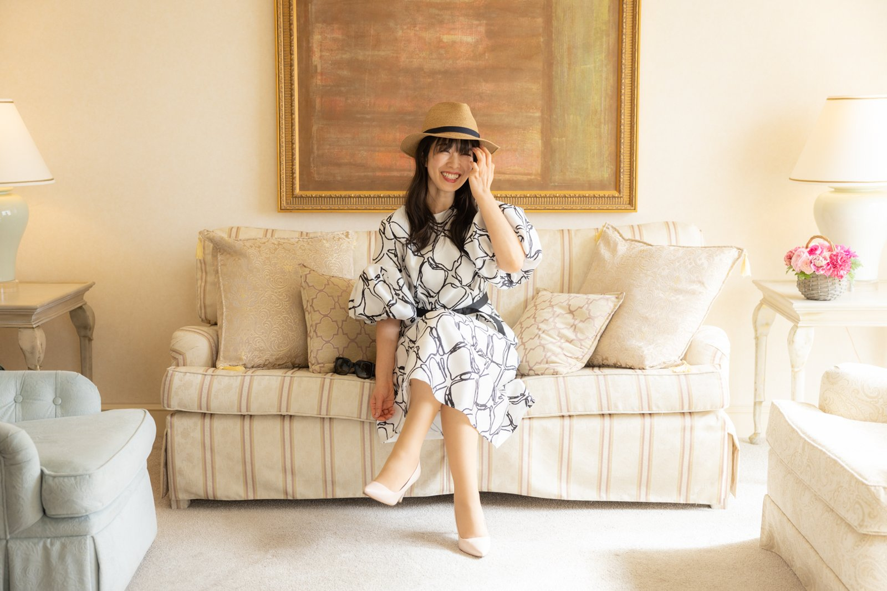
登録はメールアドレスだけ
朝、スマホを手に取って、ニュースやSNSをひらく前に。
自分の今日の流れを、1分だけ見る。
運の流れ予報は、そんな朝の習慣です。
九星気学の暦にもとづいて、あなたの生まれ持った本質と、今日という日の流れを、毎朝読み解いてお届けします。
URLを開くだけで、あなたの本質や今日の流れ、方位・食・ラッキーモチーフなどを確認できます。
毎朝の小さな習慣として、その日の自分を知り、今日のベストを選ぶために使ってください。
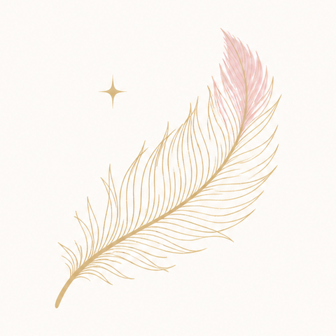
私たちの毎日は、小さな選択の連続です。
何をする？ 誰に会う？ どこへ行く？ 何を大切にする？
そのたびにゼロから迷うのではなく、先に今日の流れを知っておく。
すると、迷う時間が減り、自分で決めて動けるようになる。
そして、毎日の選択に納得感が生まれ、人生が、自分のものになっていく。
運の流れ予報は、答えをもらうための占いではありません。
自分を知り、流れを知り、
今日を自分で選ぶための、羅針盤です。
届くのは、情報ではなく、今日の選び方です。
本質、季節、今月、今日、そして方位まで。
知ったことが、そのまま今日の一手になります。
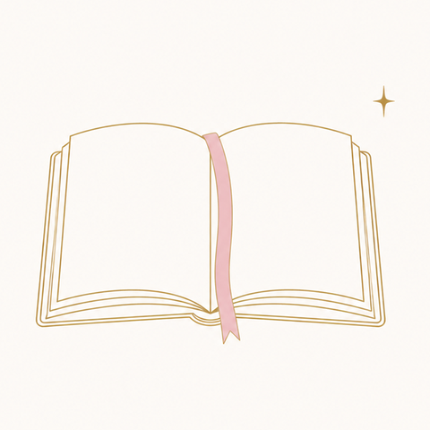
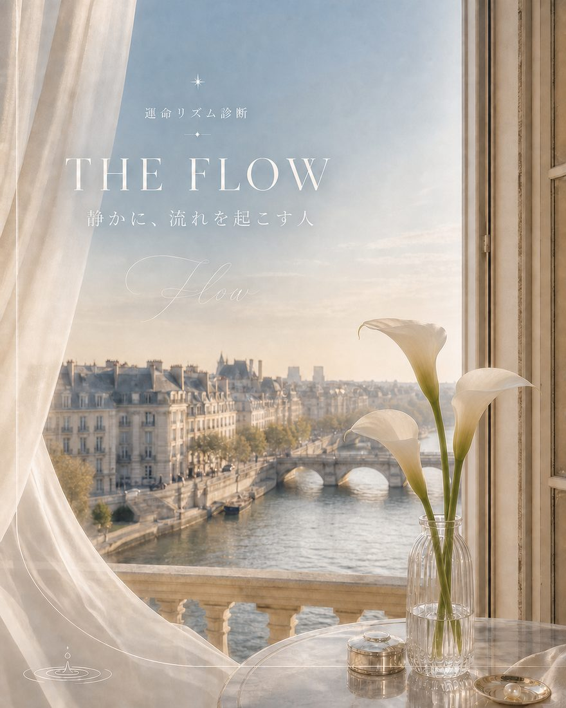
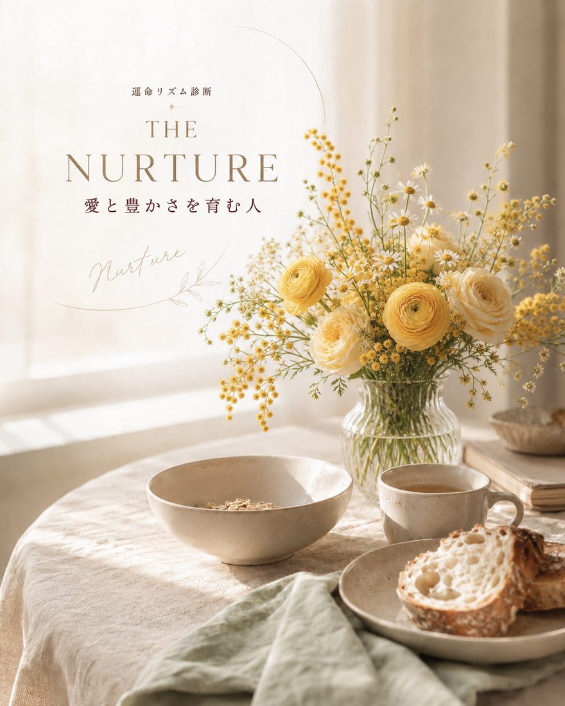
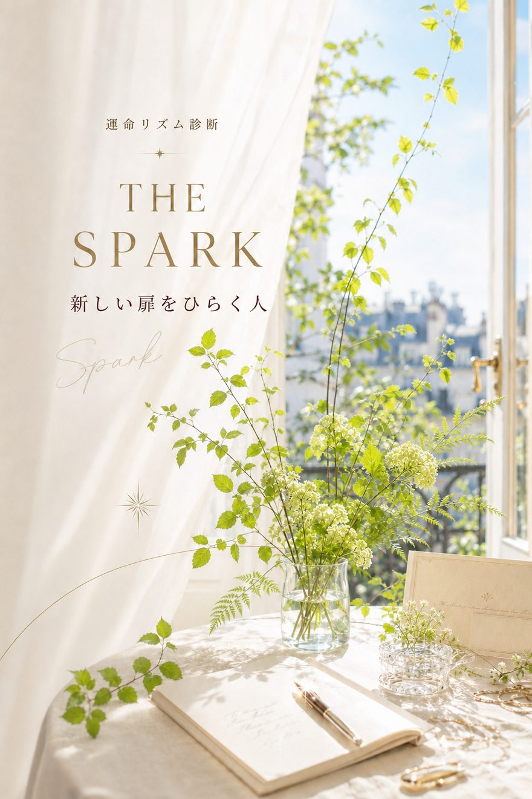
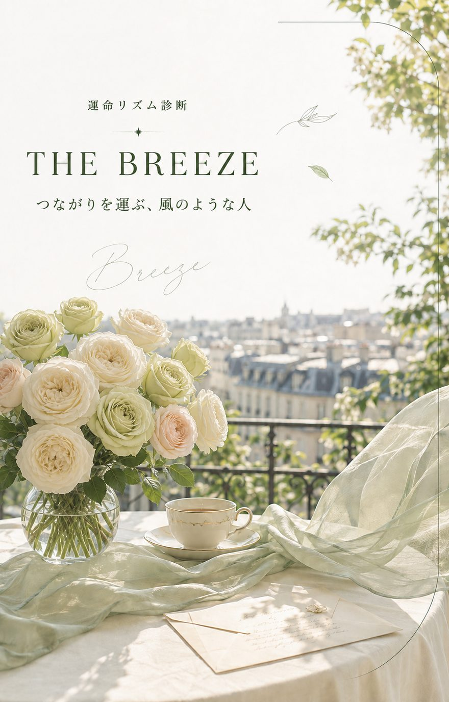
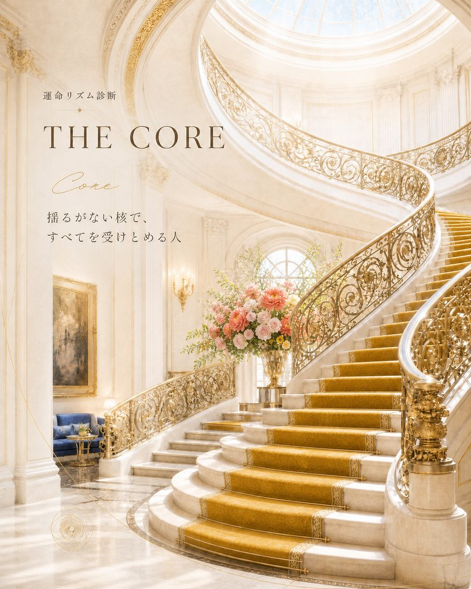
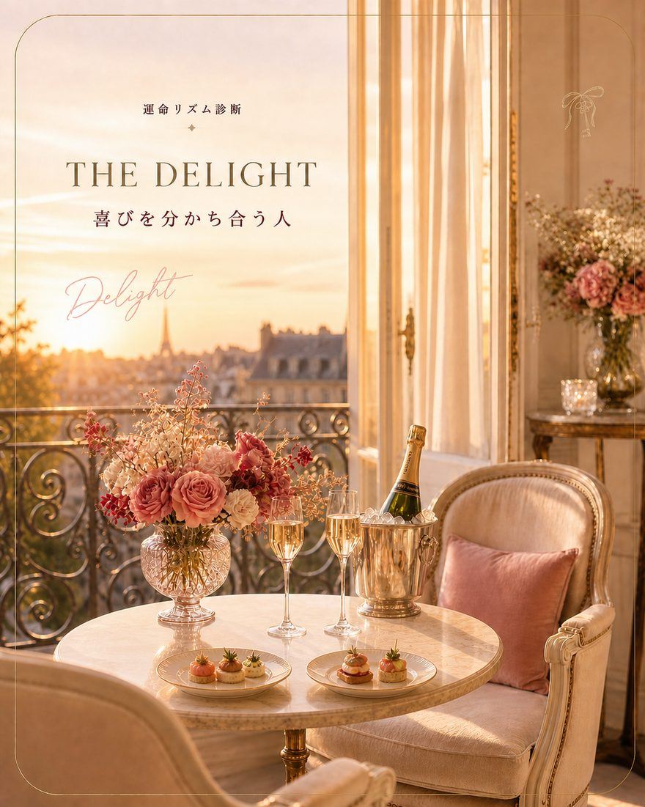
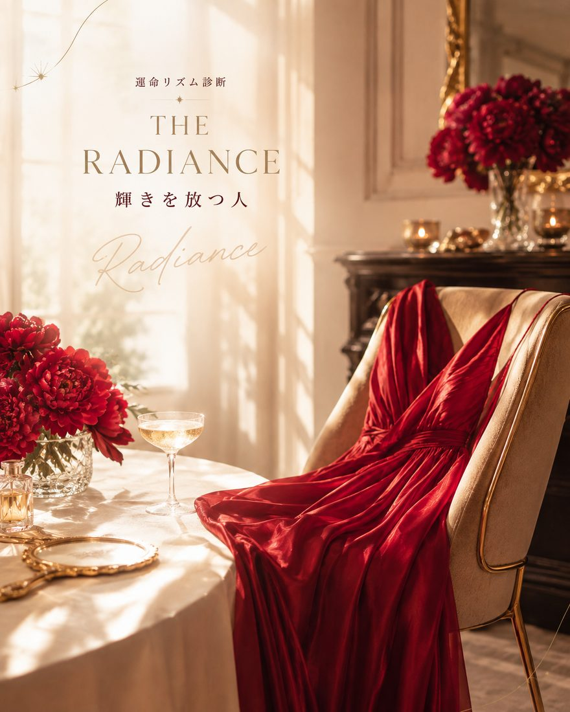
生年月日を入れると、あなたの星のカードが、この形で届きます。
あなたは、人生の楽しさや豊かさを人に思い出させる人。言葉、笑顔、華やかさ、会話のセンスなど、人の心を自然に開く魅力を持っています。頑張ることだけが前進ではありません。あなた自身が人生を楽しみ、喜びを受け取るほど、その明るさは周りにも広がっていきます。
あなたの才能は、人と人の間にある緊張をふっとほどくこと。打ち合わせで本音を引き出したり、初対面の人同士を自然につないだり。接客、企画、発信など、相手の反応が見える場所では、会話のセンスと明るさがそのまま仕事になります。
元気が出ないときは、無理に盛り上げ役をしなくていい。好きな飲み物を選ぶ、きれいなものを見る、気を使わず話せる人と笑う。まず自分の機嫌を取り戻そう。
これからは、みんなが喜ぶかより「私、ほんとうにこれ好き？」を先にしていい。あなたが夢中になれるものの中に、次に育てたい仕事や出会いが隠れているかも。
あなたの星のカードは、登録してすぐ、無料で見られます。
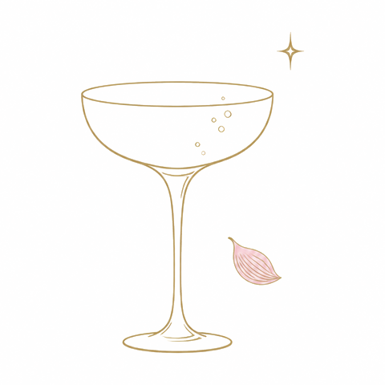
仕事も、きれいも、愛も。
流れを知ると、選び方が変わる。
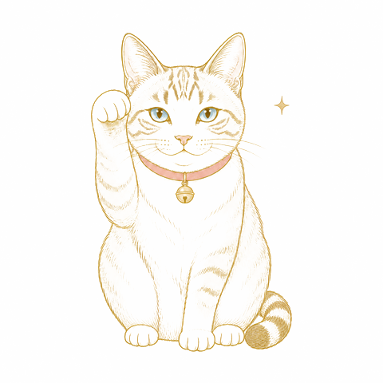
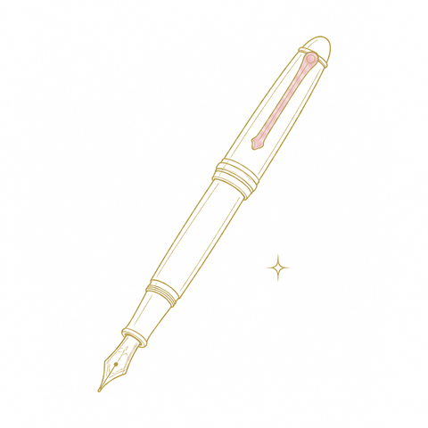
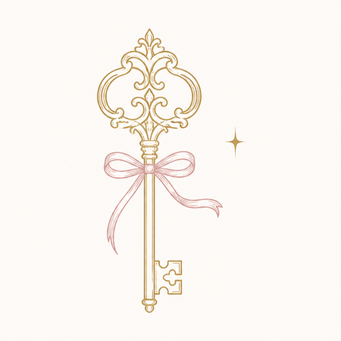
アプリのように、ワンタップで運の流れ予報を開けます。
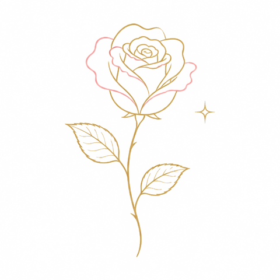
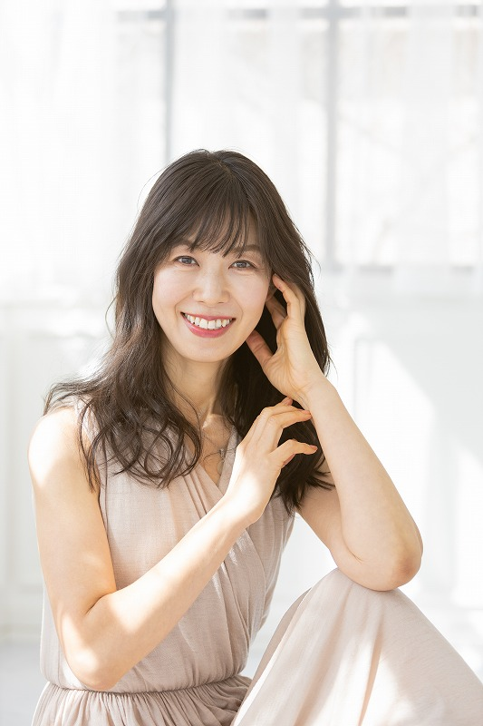
JALの客室乗務員として23年。ファーストクラスの機内で、一流と呼ばれる人たちの「動き方」を間近に見てきました。いまは九星気学と人生設計を軸に、運の流れを現実の選択に翻訳する仕事をしています。
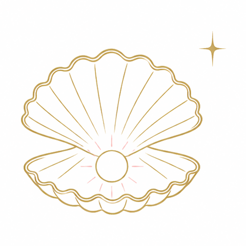